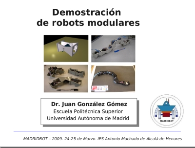

El miércoles 25 de Marzo estuve en MadridBot haciando una demostración de robots modulares. Además, tuve (la mala suerte) de ser uno de los jueces en la prueba libre. Es una prueba en la que TODOS los robots presentados son impresionantes y el tener que decidir en qué puesto queda cada uno es muy difícil 🙁 Se haga como se haga, el resultado siempre es injusto.
Las transparencias de la presentación así como los víceos y más información están publicadas en el wiki.
Hola Juan!
A ver si para la próxima charleta que des nos avisas con tiempo a Alvaro y a mi y nos pasamos y ya de paso nos vemos. Tb esta pendiente una visita a mi labo y al de alvaro.
Un abrazo
Hola Iñaki!
Sí, tenemos esas visitas pendientes. Estaremos en contacto 😉
Saludos, Juan